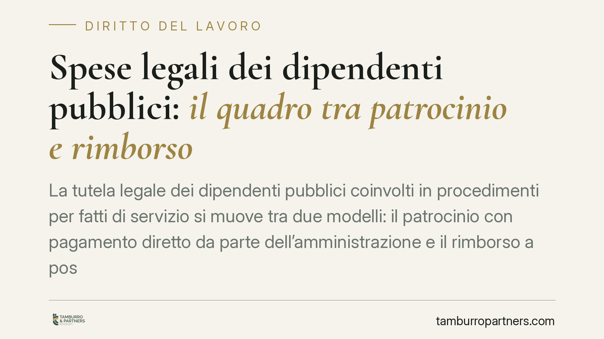

Spese legali dei dipendenti pubblici: il quadro tra patrocinio e rimborso
La tutela legale dei dipendenti pubblici coinvolti in procedimenti per fatti di servizio si muove tra due modelli: il patrocinio con pagamento diretto da parte dell'amministrazione e il rimborso a posteriori, subordinato all'esito del giudizio. La differenza non è formale: incide su chi sopporta il rischio economico delle spese legali in corso di causa.

Il tema e perché conta
Quando un dipendente pubblico è chiamato in giudizio per fatti connessi all'esercizio delle sue funzioni, si pone la questione di chi paghi l'avvocato. Il sistema vigente conosce due modelli distinti: il patrocinio con assunzione diretta degli oneri da parte dell'ente e il rimborso delle spese a procedimento concluso. La scelta tra l'uno e l'altro sposta il rischio economico su soggetti diversi e dipende dal tipo di giudizio.
Si registra un dibattito, anche in sede di rinnovi contrattuali, su una possibile restrizione del pagamento diretto a favore del rimborso successivo. Allo stato, in assenza di fonti normative definitive e verificabili su un'eventuale stretta, è opportuno ragionare sul quadro certo oggi applicabile, segnalando che eventuali modifiche contrattuali future andranno lette alla luce di esso.
Inquadramento normativo
Per il personale degli enti locali, il patrocinio legale è disciplinato in via contrattuale: la fonte storica è l'art. 28 del CCNL Comparto Funzioni Locali (già art. 67 del CCNL 2000), che prevede, a determinate condizioni, l'assunzione da parte dell'ente degli oneri di difesa del dipendente per fatti connessi al servizio, purché non sussista conflitto di interessi con l'amministrazione. La numerazione dell'articolo ha subìto nel tempo rinumerazioni a seguito dei rinnovi: è pertanto necessario verificare il riferimento aggiornato nel CCNL applicabile al singolo ente.
Per i giudizi di responsabilità amministrativo-contabile davanti alla Corte dei conti vale invece una disciplina legislativa autonoma: l'art. 3, comma 2-bis, del D.L. 23 ottobre 1996, n. 543, convertito dalla L. 20 dicembre 1996, n. 639, stabilisce il rimborso delle spese di difesa in favore del dipendente a determinate condizioni. La giurisprudenza contabile ha chiarito che il presupposto del rimborso è il proscioglimento nel merito, con esclusione della responsabilità: non è sufficiente qualunque esito favorevole, né il rimborso opera automaticamente.
Patrocinio diretto e rimborso: chi sopporta il rischio
La distinzione pratica è netta. Con il patrocinio diretto l'amministrazione paga il difensore durante il procedimento: il dipendente non anticipa somme e il rischio economico resta in capo all'ente. Con il rimborso a posteriori il dipendente anticipa le spese e le recupera solo dopo, e solo se l'esito del giudizio integra i presupposti di legge o di contratto. Qui il rischio di anticipazione e di mancato recupero grava sul lavoratore.
Un eventuale spostamento verso il modello del rimborso avrebbe quindi un effetto concreto: il dipendente dovrebbe sostenere i costi della difesa nell'immediato, confidando nel recupero futuro.
Il presupposto del conflitto di interessi
La tutela — in entrambi i modelli — presuppone l'assenza di conflitto di interessi tra dipendente e amministrazione. Se il giudizio vede contrapposti il lavoratore e l'ente, il patrocinio o il rimborso non spettano. La valutazione va compiuta all'inizio del procedimento e verificata nuovamente al suo esito.
I presupposti secondo il tipo di giudizio
Le condizioni variano a seconda della sede:
- Giudizio contabile: il rimborso presuppone il proscioglimento nel merito con esclusione di responsabilità (art. 3, co. 2-bis, D.L. 543/1996).
- Giudizio penale: rileva l'esito favorevole, ma la casistica è articolata — contano le formule assolutorie adottate e l'assenza di conflitto di interessi; esiti come la prescrizione vanno valutati caso per caso.
- Giudizio civile o amministrativo per fatti di servizio: si applica la disciplina contrattuale di comparto, con le condizioni ivi previste.
La semplificazione secondo cui basterebbe una generica "assoluzione piena" non è esatta: ogni sede ha presupposti propri.
Cosa fare in concreto
- Verificare il CCNL di comparto applicabile e la numerazione aggiornata dell'articolo sul patrocinio legale, prima di assumere posizioni.
- Accertare da subito l'eventuale conflitto di interessi con l'amministrazione, perché ne dipende la spettanza della tutela.
- Nei giudizi contabili, considerare che il rimborso richiede il proscioglimento nel merito e non ogni esito favorevole.
- Documentare per iscritto ogni richiesta di patrocinio o rimborso all'ente, con indicazione dei fatti e della connessione con il servizio.
- Conservare parcelle, atti e provvedimenti conclusivi del giudizio, necessari per la quantificazione e il recupero delle spese.
Disclaimer
Contributo informativo a cura di Tamburro & Partners - Avv. Giuseppe Tamburro. Non costituisce parere legale.
Ogni storia di lavoro ha i suoi tempi.
Se gestisci HR e vuoi un confronto su contenzioso, ispezioni o licenziamenti, scrivi allo studio. Ti rispondiamo entro un giorno lavorativo.